We’ll start by thinking of music a made of notes. Notes can be characterized by four properties.
Pitch - the frequency of the sound
Point in time when it begins and ends
Loudness - the energy the sound wave carries
Tone color/timbre - distribution of energy at various frequencies as well as how the energy accumulates/dissipates.
We’re focus on measuring/quantifying pitch and time of a note much more than we do for the loudness and timbre. To measure pitch/time we usually put them in a reference system (I guess the same thing as a reference frame in physics).
Pitch
A pitch is how high or low a note is. We identify pitches by relating them to a specific collection and compare pitches by relating both pitches to a specific collection. I guess an example of this would be how the 440Hz is \(A_4\) on the piano.
Collections
Lets examine one collection that everyone knows about, the Chromatic Collection which is measured by semitones. Lets first play one note on the piano, and if we go exactly one key higher (e.g. from a C to a C#) then the difference between the pitches of those two notes (should) be the exact same difference between the pitches of the note one key higher and two keys higher (e.g. from C# to D). The difference in these pitches are called semitones. A collection of pitches that are separated by semitones is called a chromatic collection. Using this notion of semitones we can also start comparing pitches by describing their difference in semitones. For example, C and D differ by 2 semitones.
Lets move onto another collection hm? An interval of twelve semitones is very special. For example, if we play the highest note on the piano and then a note 12 semitones lower, what do we get? The same note but an octave down. Despite the fact that they’re obviously not the same pitch, we can accept they’re the same note. A collection or set of notes that are separated by 12 semitones is called a Pitch Class.
Now just one more collection. Consider the intervals between notes if we only use the white keys starting at a C. We’ll notice that there’s a repeating pattern every 7 notes. We’ll denote semitone as ST and two semitones as a whole tone of WT. The pattern goes \[WT\text{ }WT \text{ }ST \text{ }WT \text{ }WT \text{ }ST\]
We can do this pattern starting on other notes too(this is obviously a scale but pretend you don’t know that.) A set of pitches separated by this pattern is called a Diatonic Collection. Since there are twelve pitches to start on in the chromatic collection, there are twelve diatonic collections if we work from the frame of reference of the chromatic collection.
Notating Pitch
To notate pitch we use a five line staff were we can put a note on a line of between two lines. Notes of the same pitch fall on the same line/space and notes adjacent in the diatonic collection are on the adjacent lines and spaces. We use a clef to denote which line/space corresponds to which pitch and we use a key signature to denote what diatonic collection we are using. We can use accidentals to denote notes that are not in a diatonic collection. By putting a sharp(\(\sharp\)) we can demonstrate that we want to play a note a semitone higher and putting a flat(\(\flat\)) we can demonstrate that we want to play a note a semitone lower. There are also double-sharps, double-flats, and naturals.
Naming Intervals
We can name intervals by pitches relations to eachother in a collection. For example two pitches that are the same have the same name in a collection and can be called a unison. Two adjacent pitches can be called a second. We should notice that there are two kinds of "second" intervals in the diatonic set however. One is a interval composed of two semitones(e.g. C to D in the C-Diatonic collection) and another is a interval composed of one semitone (e.g. E to F in the C-diatonic collection). We’ll call the former a major second and the latter a minor second.
We can think of bigger intervals by how they can be made up of major or minor seconds. A interval that is made up of two second intervals can be called a third. And since there are two kinds of second intervals there must be at least two third intervals. In the diatonic collection we have intervals made up of two major second intervals (e.g. F to G to A) and intervals made up of a major second and a minor second interval (e.g. D to E to F). We’ll call the former a major third and the second a minor third. There is another third that can be made up of two minor seconds (e.g. G# to A to Bb) that doesn’t appear in the diatonic collection that we’ll call a diminished third.
Fourths are very similar. They are intervals made up of three second intervals and in the diatonic collection there are two possibilities. An fourth interval with a difference of five semitones (via some combination of two major seconds and one minor second) and a fourth interval with a difference of six semitones (via three major seconds). The former we can call a perfect fourth. The latter is called an augmented fourth and only occurs once in a diatonic collection. A possible combination that doesn’t appear in the diatonic set is a fourth made up of two minor seconds and one major second. This we’ll call a diminished fourth.
Lets speed run the remaining three since this is getting tedious. \[mS=\text{minor second}\]\[MS=\text{major second}\] Fifths can be either perfect(ms+3MS), diminished(2ms+2MS), or augmented(4MS).
Sixths can be major(ms+4MS), minor(2ms+3MS), or augmented (5MS).
Sevenths can be major(ms+5MS), minor(2ms+4MS), or diminished (3ms+3MS).
Eights are called octaves and if they are in the diatonic collection, then there is only one. An interval made up of 12 semitones or (2ms+5MS). We’ll call this a perfect octave. There are of course also augmented octaves(ms+6MS) and diminished octaves(3ms+4MS).
Octaves larger than an either can be called compound octaves and can be thought of in terms of \(n\cdot octave\) and some interval smaller than an either. For example, we can think of a major \(10^{th}\) to be just an octave and a major third.
Exercises
Generate a diatonic collection starting at 6 o’clock
We have generated the G-scale
For each of the following give (a) the size of the interval in semitones and (b) the name of the interval in terms of he diatonic collection. They’re shown as notes on a stave in the book but I’ll just write the note names here for simplicity.
B to C in key of C - one semitone, minor second
D to E in key of C - two semitones, major second
B to C# in the key of E - two semitones, major second
D# to E in the key of E - one semitone, minor second
F to A in key of Bb - four semitones, major third
A to C in key of Bb - three semitones, minor third
F# to A in key of D - three semitones, minor third
A to C# in key of D - four semitones, major third
F# to B in key of D - five semitones, perfect fifth
A to F in key of C - eight semitones, augmented fifth
F to B in key of C - six semitones, augmented fourth
A# to D in key of D - four semitones, major third
B to F in key of C - six semitones, augmented fourth
D to A in key of C - seven semitones, perfect fifth
Bb to F# in key of Bb - eight semitones, augmented fifth
Db to Ab in key of Ab - seven semitones, perfect fifth
B to G in key of C - eight semitones, augmented fifth
D to B in key of C - nine semitones, major sixth
Bb to G in key of Ab - nine semitones, major sixth
Db to B natural in key of Ab - ten semitones, augmented sixth
F to E in key of C - eleven semitones, major seventh
A to G in key of C - ten semitones, augmented sixth
F# to Eb in key of Eb - nine semitones, major sixth
Ab to G in key of Eb - eleven semitones, major seventh
Time
To start exploring time lets consider a point \(P_1\), a reference point in time. Some time afterwards we’ll have another point, \(P_2\). The difference between the times of these two reference points we’ll call \(S\). with these reference points we can now begin to estimate things like when a note starts, and how long a note lasts. We can also create an infinite series of points \(P\) separated by a time S. We can also subdivide each period of S into a certain number of subsections and use this as a new, secondary reference system to understand how long notes last and when they start/end. To denote points in this secondary reference frame we’ll use lowercase \(p\). We’ll think of each reference point as a beat. We’ll think of every primary reference point (e.g. \(P_1\)) as as downbeat and every secondary reference point immediately preceding a primary reference point as an upbeat. We’ll call the difference between two downbeats (primary reference points) a measure. We’ll call the way a secondary reference system divides up the primary reference system the meter. The rate at which beats occur will be called the tempo.
Notation
Time signatures are written at the beginning of the measure. Top number of time signature decides how many sections the primary reference system is divided up into. The bottom number decides which length of note (whole, half, quarter, eights, etc.) corresponds to the period between sequential reference points in the secondary reference system. Putting a dot next to a note shows that you want that note to last 3/2 as long as the note without the dot. E.g. a half note with a dot lasts 3 beats as opposed to two beats. Putting a triplet sign over a series of notes means you want each note to last 2/3 it’s original length. Putting a tie between two notes means we want one note with the length of (length of first tied note + length of second tied note.)
Exercises
In the following a dot (\(\cdot\)) represents a point at which a note begins while a wedge (can’t do that in latex!) represents a beat. Transcribe the information into musical notation, letting a quarter note equal one beat. (Not sure if I can put a picture of the question information here so I’m not.)
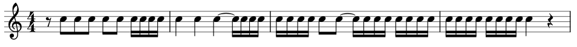
Not sure what this question was asking and the author’s dead so I guess I’m not doing this one.
At the beginning of the sixth Brandenburg Concerto Bach gives the same series of notes to both violas but with the second viola always just an eighth behind the first. The duration without respect to a beat are: (not sure if I can show an image). Rewrite both parts to show the relationship to these notes to a quarter-note beat.
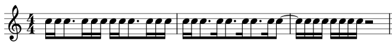
And second part is the same thing but with a eighth reset in front.
Loudness
We rarely think of loudness as an value like we do for pitch but more as relative to other "loudness." For example, imagine a note in your head. Then imagine a note louder than that. It’s easy to do this since it’s what we’re used to, thinking of loudness as relative. Now try to imagine another note that is louder than the second note you imagined as much as the second note was louder than the first note. Or more formally let the "change" in loudness from the first note to the second note be \(x\). Try to imagine a third note that is \(x\) louder than the second note. This in turn becomes much more complicated. You’d be hard pressed to find a group of 3 people who imagine the same "loudness" of the third note. This is to illustrate the differences between how we think of loudness vs. how we think of pitch for example. The reason for this is because, unlike pitch or time, we use loudness to convey something other than loudness. Think of your metronome for example. It’s alternating between a louder and softer note but we think of that as upbeat and downbeat instead of loud note soft note. In real music, loudness also varies greatly even in the same "class" of loudness. If we measure the "loudness" of a piano player playing a section labeled mf (mezzo-forte), the loudness isn’t the same(or it shouldn’t be.) And if we measured him again at pp(pianissimo) the only thing we should be able to agree on is that he is playing softer. Loudness also comes with context and is supposed to convey something that isn’t itself loudness. It’s part of a contextual language that isn’t explicit like pitch and time.
Timbre
Timbre’s a funny thing. Sing a middle C and then play it on the piano with the same loudness. They both have the same pitch, length, and loudness, but they’re different. There’s some quality about them that isn’t the same, but what is it? Lets imagine that we can quantify that difference in "quality" between the piano and the voice as \(x\). Can we imagine a note with the same difference in quality, \(x\), from the piano note? Or can we imagine a note with less of that quality than a piano note or more of that quality than the voice note? I sure as heck can’t.
Lines
Notes can be combined into chains of consecutive notes. We’ll call these chains lines. For two notes to be consecutive, they must satisfy the following conditions.
The two notes start at different times
No note can start between the two notes
One note must end before the other begins.
We can think of a piece of music as multiple lines occurring at the same time.
Repetition, Skips, and Steps
There are three possible intervals between consecutive notes in any given line. The first is a where we play the same note again. The next is a step where there is a minor/major second difference between two notes. The final kind of interval is a skip which means there’s a difference that is greater than a minor/major second. Each of these intervals affect the conceptual status of the first note. A repetition confirms the conceptual status of the first note by explicitly confirming it. A step confirms the conceptual status of the first note by explicitly denying it. And the skip leaves the conceptual status of the first note in question until it is confirmed or denied further along in the line.
Consonance and Dissonance
Intervals can be classified into two categories, consonant and dissonant. Consonant intervals are
Perfect Unisons
Perfect Octaves
Perfect \(5^{th}\)
Perfect \(4^{th}\) where the bottom note isn’t the lowest note that is currently being played
Major/Minor \(3^{rd}\)
Major/Minor \(6^{th}\)
Consecutive notes that differ by a consonant interval can be thought of as stable. Dissonant intervals are
Perfect \(4^{th}\) where the bottom note is the lowest note that is currently being played
Major/Minor \(7^{th}\)
Major/Minor \(2^{nd}\)
Augmented/diminished intervals
Exercises
Mark the steps
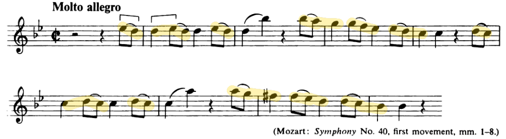
Mark the dissonant intervals
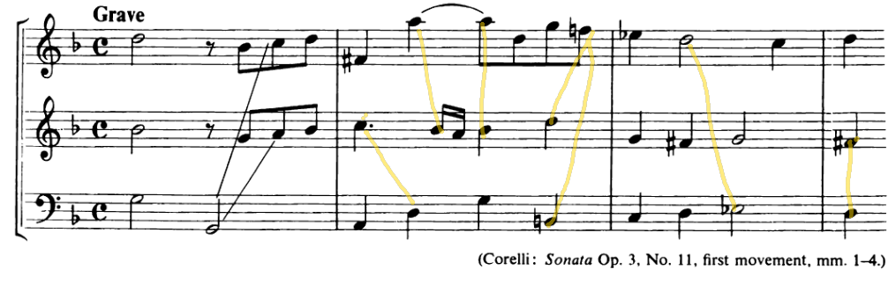
Mark the dissonant skips
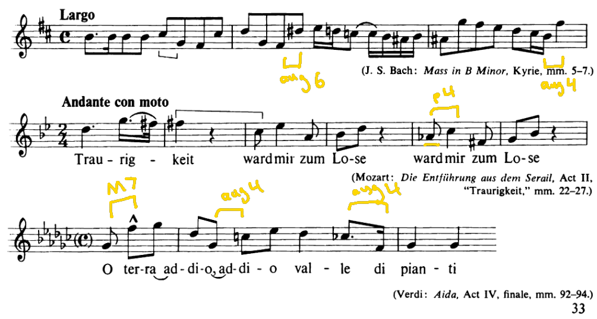
Linear operations and constructs
Lets define the linear construct rearticulations with a series of operations. First we have a note which we know the pitch, time when it begins, and duration. Now lets take two notes with the following properties
Their durations are equal and the sum of their durations equals the original note duration
They both have the same pitch as the original note
The first of the two notes begins at the same time as the original note.
Something to note is that we should think of the pitch of the second note in terms of the first note. In other words, the first note has conceptual priority.
Now lets imagine two notes of a rearticulation as a member of a diatonic set. We’ll take the later part of the first note and change it to a adjacent member of the diatonic set.
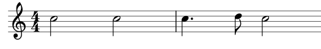
We’ll call this added note a neighbor and the linear structure a neighbor embellishment. We think of the neighbor in terms of the two notes of the same pitch therefore we can say that the repeated notes have conceptual priority over the neighbor. Sometimes we also have to consider when a neighbor is not part of the diatonic set we’re considering. If the neighbor is only a minor second away from the repeated notes then we can think that this note was changed just to intensify the sense of adjacency.
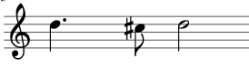
If it’s a major second away however, then we have to consider the embellishment in terms of another diatonic set.
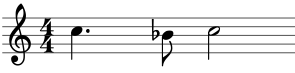
Now lets think of two notes of a certain length that both begin in the same time. These two notes form a consonant interval. If we want both of these notes to be in the same line we could create two notes where the sum of the two notes length is equal to the original note and where the first note begins at the same time as the original note. This is arpeggiation. The original notes have conceptual priority over the arpeggiation since they are what define the arpeggiation. Now lets look at the arpeggiation. If we think of both of them as being part of the same diatonic set and use some later part of the first note to add some notes to link the two notes, it’ll be called step motion. Sometimes we might not use a note from the diatonic set. If this causes a minor second step at the end, it simply intensifies the sense of "getting there." If altering the pitch causes a minor step to occur somewhere else, then it is just a member of a different diatonic set.
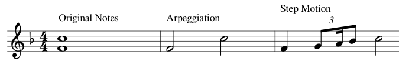
Lets consider a line with two notes. Now lets take the second note and replace it with another note which last during the same time period (e.g. it ends at the same time) but begins later than the original note. This we’ll call a delay. This space that is left open by a delay can be filled with more of the first note, rest, or some other structure we’ve described (step motion, apreggiation, etc.)
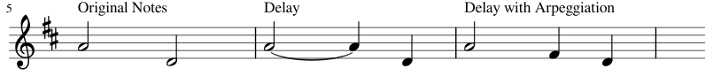
Exercises
Triads, the Tonic, and the Diatonic Degrees
Triads are formed from the following procedure.
Pick any pitch class, lets pick C.
Pick any pitch class that can form a consonant interval with our first pitch class. In our case we can choose E, Eb, F, G, A, Ab. Lets pick E.
Pick any pitch class that can form a consonant interval with both our previous pitch classes. Since we picked C and E, now our choices are limited to G and A.
The three pitch classes we’ve chosen form a triad. There are only a few possible pitch classes given that we pick C first. Namely
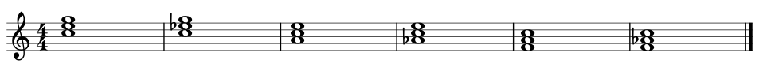
Notice how each triad forms a 5th formed by a major 3rd and a minor third. We define each triad based on the lowest note, aka the fundamental pitch. So we have two C triads (CEG and CEbG), two F triads (FAC and FAbC) one A triad (ACE) and one Ab triad (AbCE). The relation between the fundamental pitch and the note a third above it determines the color of the chord. If that interval is a minor third then it is a minor triad, if that interval is a major third then it is a major triad. We can think of any tonal piece in terms of a fundamental pitch class, which we’ll call the tonic. A tonic triad is the triad with the tonic as the fundamental pitch. If this triad is major we can say the piece is in a major key, if it’s minor then we say the piece is in a minor key. To build a diatonic set from the triad, add notes a 5th above or below each member of the triad.
Exercises
Indicate the six different triads that include the pitch class at eight o’clock.
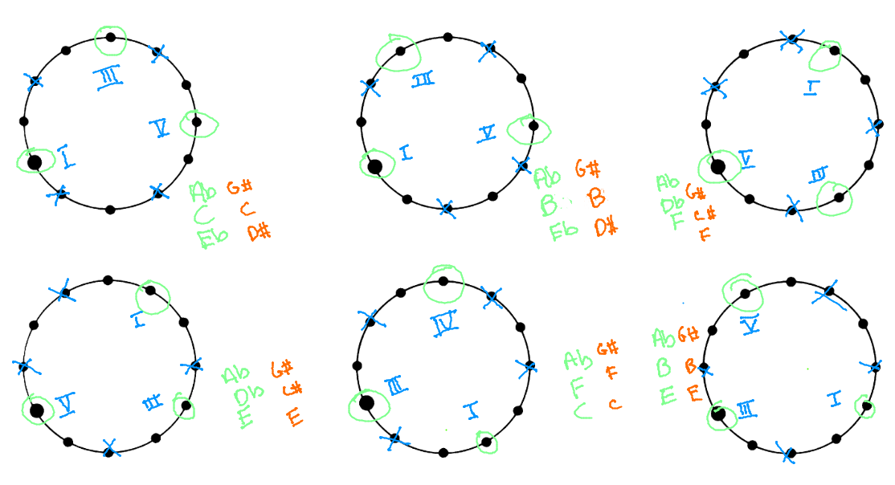
On the diagram above, write the name of the other pitch classes
On the diagram below write the name of the other pitch classes if eight o’clock was called G# (I just included it on the diagram above again)
Label the fundamental pitch class of each triad as I, a fifth above as V and third as III. Add intervening diatonic degrees. (I included that in blue above.)
For each of the keys indicated in the circle diagram, write out the degrees of the diatonic collection.
Tonal Pitch Structure
Tonal pieces are built from the primitives we discussed this chapter.
Exercises
For each of the following show how the line on the 5th staff can be derived from the simple structure on the first staff by labeling each new configuration
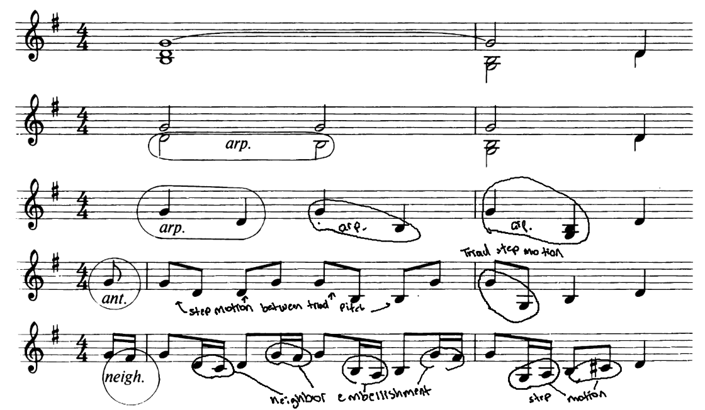
Species Counterpoint
What Species Counterpoint Is and What It’s for
Species counterpoint is a simple first approximation of real tonal music. Species counterpoint are similar tonally but the rhythm is much more simplified. Every line has one rate of flow. That is to say one line is composed only of whole note, half notes, quarter notes, etc. Lets give an example of 1st, 2nd, 3rd, and 4th species counterpoint.
Mixed/higher species consists of combining multiple lower species. We study counterpoint species since we can use higher species to study all possible relationships between simultaneously sounding notes. For example if we want to study the relation of two notes in which one note begins halfway through the previous beat and ends halfway through the current beat and the second note begins on the beat and ends before the first note, we study a combination of the third and fourth species.
Construction Species Lines: Some Operational Rules
We can differentiate between lines in a composition based on the range and structure. The lowest line we’ll call the bass line in which it’s note is never louder than any note currently sounding and is based on the arpeggiation of the tonic and dominant (fifth) degree. This kind of arpeggiation is called basic arpeggiation. At least one of the other lines will be based on descending via step motion from the mediant (3rd), dominant (5th), and tonic to the tonic. We’ll call this kind of step motion basic step-motion. The other lines will be based on (repetition of, neighbor embellishment of, arpeggiation of, or step motion between) tonic triad pitches. We construct simple species lines of each type using some operation rules.
Operational Rules for construction an upper line with a basic step motion
Constructing basic step-motion lines
The final pitch must be the tonic (rule A1)
The first pitch must be either the tonic, mediant, or dominant (a triad member.) (rule A2)
These two pitches must be joined by using descending diatonic degrees between the two pitches. (rule A3) (e.g. G F E D C)
Secondary structure
Triad pitches can be repeated (e.g. E E D C) (B1)
Neighbor may be inserted between consecutive notes of the same pitch (e.g. E E D C becomes E F E D C). This neighbor is always part of the diatonic set unless it’s the lower neighbor to the tonic in a minor key in which we replace it with a minor second. E.g. if we’re in Cminor and want to embellish C it’s C B_natural C instead of C Bb C like the diatonic set thinks it should be. (B2)
Triad pitches can precede the first note or be inserted between two notes if no dissonant skips are created and no skips larger than an octave is created. (B3)
Skips can be filled with step motion, except in a few special cases related to the minor key:
Rising step motion from 5th to tonic of a minor key requires using the raised 6th and seventh. e.g. We’re in key of C minor (3 flats) and we’re going from G to C, we have to use A and B instead of Ab and Bb
Rising step motion from the 5th to the 7th we need to use the raised 6th. e.g. Same as before but we want to go from G to Bb, we have to use A natural.
Falling step motion from raised 7th to 5th we need to use the raised 6th.
(B4)
Operational Rules for constructing bass line
Basic Arpeggiation
The final note must be a tonic
the first pitch must be the tonic
The middle pitch must be a dominant (5th above or 4th below the final tonic)
Secondary Structure
Any triad pitch may be repeated
Neighbors may be inserted between repeated notes
triad pitches may be inserted between consecutive pitches as long as no dissonant skip or no sip larger than an octave is created
skips can be connected with step motion (with same restrictions as rules B4 above)
Operational Rules for construction another upper line
Basic Structure
The final pitch must be a tonic triad member
First pitch must be a tonic triad member and it can’t be more than an octave from the final pitch.
If the pitches are identical then we can embellish with neighbor (like B2) or if they’re different we can connect with step motion (like B4)
Secondary Structure: same as B1, B2, B3, and B4
Each operation adds to the total time in a species.
Drills
A1 is applied incorrectly since the last note is not the tonic of the indicated diatonic collection (since the indicated diatonic collection is C or A minor and the note is E)
A3 is applied incorrectly since the step motion does not connect the two notes and it does not contain all intermediate members of the diatonic set
B3 is applied incorrectly since E is not part of the triad of F# minor
B2 is applied incorrectly. It should be G# since it’s the lowest neighbor in relation to the tonic in a minor key.
B3 is applied incorrectly since it creates a dissonant skip between F# and Bb
B4 is applied incorrectly since we did not raise the 6th
Exercises
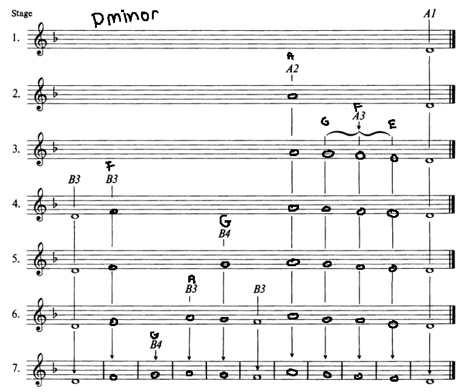
Understanding Species Lines: Structural Ambiguity and Interest
Revision History
07-11-2019: started chapter two
07-12-2019: finished section on pitch
07-13-2019: finished chapter 2
07-14-2019: began chapter 3
07-21-2019: finished operations/constructs and "triads, tonics, and the diatonic degrees"
07-23-2019: began species counterpoint
07-25-2019: finished section 4.1 and 4.2
Think you found a mistake? You probably did. Let me know at hi@delonshen.com if you want.